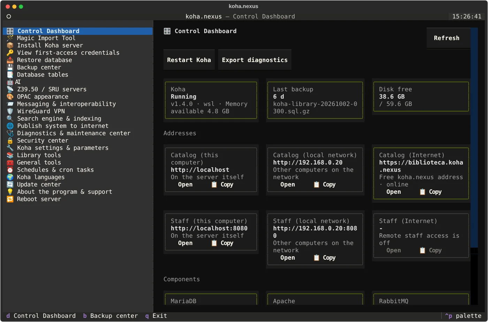

Begeleide installatie
Pre-validatie van systeem en poorten; installatie en afstemming van Koha, MariaDB, Apache, Memcached en Plack, plus SWAP, NTP en tijdzone.
koha.nexus is een slimme, gratis en eenvoudig te gebruiken assistent voor het installeren, configureren en onderhouden van het Koha Integrated Library System via een gebruiksvriendelijk dashboard.
$ wget https://raw.githubusercontent.com/PauloFBaldiFH/koha.nexus/refs/heads/main/installer$ sudo bash installer KOHA.NEXUS✓ Server valideren...✓ Koha installeren✓ Database configureren✓ Back-ups voorbereiden✓ Toegang configureren → Dashboard klaar: sudo config.sh
Van de eerste installatie tot back-ups, indexering, beveiliging, migratie en webpublicatie, de kernfuncties zijn verzameld in één controlepunt.
Pre-validatie van systeem en poorten; installatie en afstemming van Koha, MariaDB, Apache, Memcached en Plack, plus SWAP, NTP en tijdzone.
Gecomprimeerde SQL-back-ups, MARC21-exports, handmatige kopieën en optionele integratie met Google Drive via rclone.
Back-ups worden gevalideerd en getest in een tijdelijke database voordat de huidige catalogus wordt vervangen.
Schakel tussen Zebra en Elasticsearch 7, indexer watchdog, en tools voor indexherstel en heropbouw.
Cloudflare Tunnel zonder routerpoorten te openen, Certbot voor SSL, en Google Search Console assistent.
Fail2ban, UFW-firewall, opties om personeelstoegang te beperken op poort 8080, en rotatie van databasewachtwoorden.
Gegevens importeren, SQL-rapporten, kwaliteitscontroles, GDPR-privacytools, jaarlijkse categorie-rollover en meer.
Levering van Koha-kennisgevingen via WhatsApp of Telegram, volledig optioneel.
PHA of Cutter-Sanborn, DDC, Cutter calculator, veilige vervanging van MARC-records en AI-assistentie.
Draai Koha op één Windows-pc, compleet met bureaubladsnelkoppelingen, meldingen en diagnostische tools.
Dashboard-updates rechtstreeks van GitHub met SHA-256 installer-verificatie.
Geselecteerde openbare catalogi, getest met een echte zoekactie: alleen servers die geldige MARC-records teruggeven gaan naar Koha, de snelste eerst.
Texturen, afgeronde hoeken, achtergrond, logo, licht/donkerknop en een carrousel met nieuwe aanwinsten, naar Koha geschreven na een backup.
E-mail, SMS, SIP2-zelfuitleen en Z39.50 op één scherm, met links naar de juiste Koha-pagina en een SIP2-formulier dat de configuratie schrijft.
Schakel elke automatische taak in of uit en kies frequentie en tijdstip. Handgeschreven regels blijven behouden.
Medewerkers bereiken de medewerkersinterface en SSH overal met een QR-code voor hun telefoon. Alleen bibliotheekadressen gaan door de VPN.
Een openbaar catalogusadres op koha.nexus zonder domein te kopen of Cloudflare-account te openen, deelbaar als QR-code of link. Nog in de testfase.
Bibliothecarissen stellen gewone vragen over boeken, gebruikers en leningen. Elke wijziging is een voorstel dat pas na Goedkeuren en uitvoeren wordt uitgevoerd.
Voer sudo config.sh uit om het paneel op volledig scherm te openen: een live dashboard, aanklikbare kaarten, sneltoetsen en een opdrachtenpalet (ctrl+p). Dit zijn echte schermafbeeldingen van het paneel.

Verkennen in de interactieve handleidingDe status van Koha, de laatste backup, vrije schijfruimte en alle adressen van catalogus en medewerkersinterface (deze computer, lokaal netwerk en internet), elk met knoppen om te openen en te kopiëren.
E-mail, WhatsApp en Telegram, SMS, SIP2 en Z39.50 op één scherm. Links openen de juiste Koha-medewerkerspagina, een Gmail-hulpblad vult het SMTP-formulier en een SIP2-formulier schrijft SIPconfig.xml voor het zelfuitleenapparaat.
Openbare catalogi per regio en een gemeenschapslijst. De controle voert een echte zoekactie uit op elke server en bewaart alleen servers die een geldig MARC-record teruggeven, gesorteerd op snelheid.
De vormgeving van de openbare catalogus met één klik: matglas of geborsteld metaal, afgeronde hoeken, achtergrond, logo, licht/donkerknop en een carrousel met nieuwe aanwinsten en echte omslagen. Eerst wordt een backup gemaakt.
Een privé-WireGuard-netwerk voor medewerkers: voeg een telefoon of laptop toe, scan de QR-code en gebruik medewerkersinterface en SSH overal. Alleen gesplitst verkeer: de eigen internetverbinding van het apparaat blijft ongewijzigd.
Elke geplande taak met een schakelaar, frequentie en tijdstip in plaats van een teksteditor. Handgeschreven regels blijven behouden en eerst wordt het oude bestand opgeslagen.
AI-catalogisering met foto's van omslag en titelpagina, en een assistent op de Koha-medewerkersstartpagina die in gewone taal antwoordt en alleen gegevens wijzigt na Goedkeuren en uitvoeren.
De database herstellen kan nu alleen hier, naast de MARC21-export en backuproutines: het hoofdmenu heeft geen aparte optie Restore database meer. Download de nieuwste backup naar deze pc, herstel de database vanuit een backup (eerst getest, met een veiligheidskopie van de huidige), exporteer MARC21-records met één knop, test een backup in een tijdelijke database en kopieer deze stap voor stap naar Google Drive, OneDrive, MEGA of S3.
Het project ondersteunt Debian 11/12/13 en Ubuntu 22.04/24.04 op amd64 of arm64 en werkt ook op Windows via WSL 2.
Download het huidige installatiescript en voer het met beheerdersrechten uit.
wget https://raw.githubusercontent.com/PauloFBaldiFH/koha.nexus/refs/heads/main/installer sudo bash installer
U kunt vertaalbestanden naast het script bewaren om offline te werken.
git clone https://github.com/PauloFBaldiFH/koha.nexus.git cd koha.nexus sudo bash installer
http://SERVER-IP:8080http://SERVER-IP:80sudo config.shDe Windows-editie is ontworpen voor kleine bibliotheken en training, waarbij Koha-services in Debian op WSL 2 behouden blijven en native Windows-tools worden geboden.
Klik met de rechtermuisknop op de Startknop, kies Terminal (Beheerder) en klik op Ja. Plak de opdracht hierboven en druk op Enter.
Start uw pc opnieuw op en druk herhaaldelijk op de instellingsknop zodra het scherm aangaat:
Zoek in de BIOS naar Intel Virtualization Technology (VT-x) of AMD SVM / AMD-V, zet het op Enabled en druk op F10 om op te slaan.
Kunt u de BIOS niet openen via toetsen? Ga in Windows naar Instellingen → Systeem → Systeemherstel → Geavanceerde opstartopties (Nu opnieuw opstarten) → Problemen oplossen → Geavanceerde opties → UEFI Firmware-instellingen.
Controleert compatibele Windows-versie, 64-bit architectuur, geheugen en BIOS-virtualisatie.
Installeert WSL 2, bereidt Debian voor en configureert de beheerder en systemd.
Installeert Koha in Debian en maakt Windows-snelkoppelingen en bedieningstools.
Configureert toegang voor andere computers in het lokale netwerk en test poorten.
Starten, Stoppen, Herstarten, status en veilig afsluiten zonder console.
Crashes, herstel, back-ups en een lage schijfruimte activeren native Windows-waarschuwingen.
Exporteert logboeken voor ondersteuning, waarbij wachtwoorden en sleutels worden verwijderd.
Koha wordt in fasen afgesloten voordat WSL en Windows worden afgesloten.
De dashboardtools volgen een strikte beschermingsflow met preview en verificatie voordat gegevens worden gewijzigd.
Eén toegangspunt voor spreadsheets, MARC-bestanden, collecties en circulatiegegevens.
Maakt het mogelijk om een batch-import op een gecontroleerde manier terug te draaien.
Alleen-lezen rapporten voor leningen, achterstallige betalingen, acquisities en ontbrekende barcodes.
Verplaatst gebruikers tussen categorieën volgens vooraf gedefinieerde bibliotheekcriteria.
Voert kwaliteitscontroles uit in de catalogus zonder de werkelijke records te wijzigen.
Anonimiseert oude uitleengeschiedenis en verwijdert verlopen gebruikers veilig.
As funcionalidades de localização são opcionais: nada é ativado automaticamente durante a instalação ou por agendamento.
| Recurso | O que oferece | Proteção |
|---|---|---|
| Validação de CPF | Auditoria de CPFs usando dígitos verificadores e identificação de números duplicados. | Leitura apenas |
| Etiquetas Pimaco | Modelos prontos para folhas A4 e Carta, incluindo lombada, código de barras e título. | PRE-ETIQUETAS |
| Ficha Catalográfica | Gera fichas no padrão nacional integradas diretamente na visualização do registro. | PRE-FICHA |
| Feriados Brasileiros | Feriados nacionais e datas móveis, com opção para inserir os municipais. | PRE-CALENDARIO |
| Relatórios de Censo | Indicadores baseados nos dados do Koha para MEC, INEP, IBGE e SNBP. | PRE-CENSO |
| ABNT NBR 6023:2018 | Geração de referências e bibliografias a partir dos registros MARC21 em HTML e texto. | Leitura apenas |
Het dashboard centraliseert terugkerende taken en benadrukt belangrijke punten voor onderhoud.
| Wanneer | Taak |
|---|---|
| Dagelijks 23:00 | SQL-back-up & cloud-upload |
| Zondag 03:00 | MARC21 export |
| Dagelijks 01:30 | Opschonen van sessies en Zebra |
| Dagelijks 05:00 | Plack herstarten |
| Elke 2 min | Zebra indexer watchdog |
| Elke 5 min | Elasticsearch watchdog |
/root/koha_credentials.txt — eerste inloggegevens/var/backups/koha_sql/var/backups/koha_marc/etc/koha-easy-install//var/log/koha-easy-install/~/importarHet dashboard verzamelt de status, Apache-logs en database-onderhoud.
Het project omvat verificatie na een onverwachte herstart.
uninstall.sh script verwijdert Koha, databases en back-ups permanent.Verken de openbare catalogi die door onze partnerinstellingen worden onderhouden.
Actuele lijst van het koha.nexus-netwerkHet project bevat tests, vertalingen en verificatie voor automatische updates.
Bats test suite voor back-up, WSL en Windows componenten.
Gedeeltelijke woordenboeken en automatische afwijzing van slechte vertalingen.
Het installatieprogramma gebruikt SHA-256 om zijn eigen updates veilig te valideren.
GNU General Public License v3.0 of nieuwer. De software wordt geleverd zonder garantie.
Vragen, ideeën, een bibliotheek die wil aansluiten of een Z39.50-server die op de lijst hoort: schrijf hier en u ontvangt antwoord per e-mail.